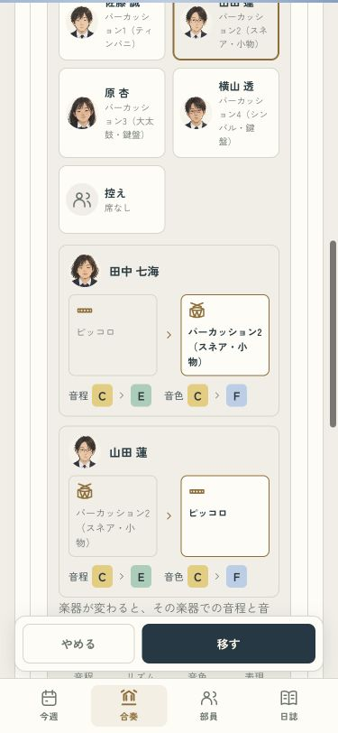
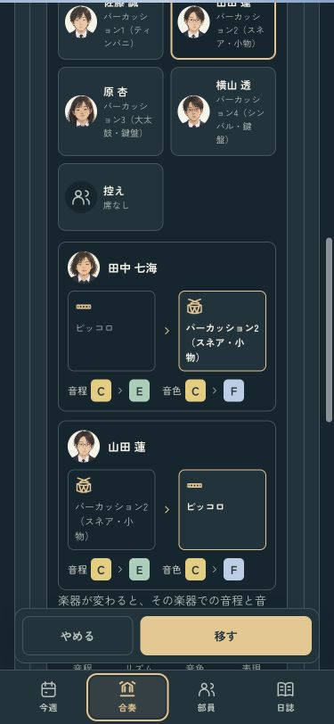
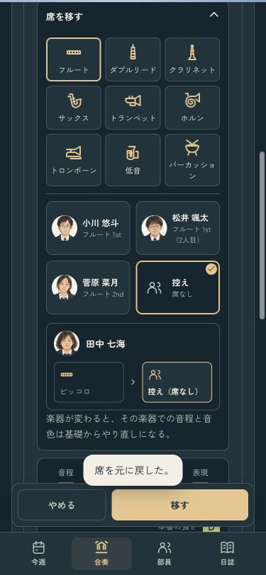
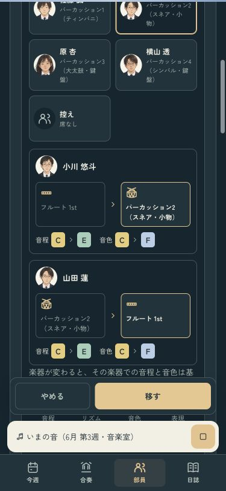
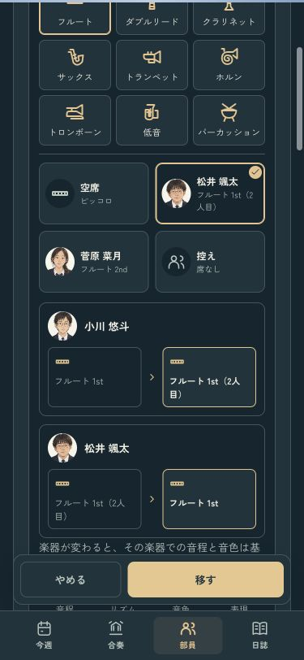
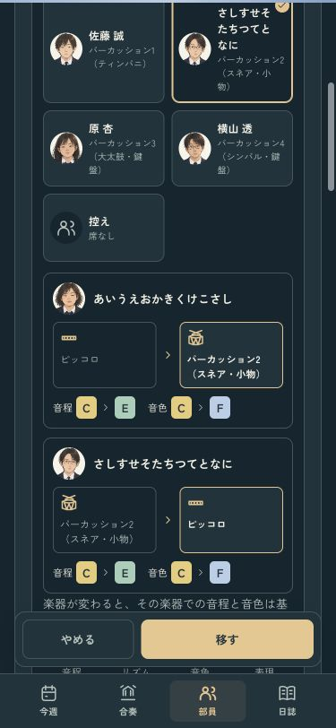

誰が、どの席へ移るか
席を選ぶと、二人の顔と「元の席 → 移る席」を並べて確認。変わるランクも一緒に見せます。スマホでは確認欄がボタンに隠れない位置まで移り、決める前に二人の変化を見られます。
部員カードで試す · 操作の確認記録
確認ページは本物のセーブと設定を変更しません。iPhoneへのインストールは成功。端末のロックにより、実機での表示と音は未確認です。
二人の移動前後・ライト
二人の移動前後・ダーク
控え・再生中・長い名前も確認
控えへ移る
再生中に選ぶ
同じ楽器の席を交代
名前が長い場合